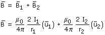

|
Campo creado por varios cables paralelos El campo que, en un punto, crean varios conductores paralelos es la suma vectorial de los campos que crea cada uno por sepa-rado en dicho punto (Principio de superposición) En el caso de una distribución de dos conductores sería:  ¿Sabes sumar vectores en esta forma? En algunas distribuciones de conductores puede que se com-pensen entre si algunos de los campos creados por estos. Vale la pena analizar si ocurre esto para evitarnos cálculos. |